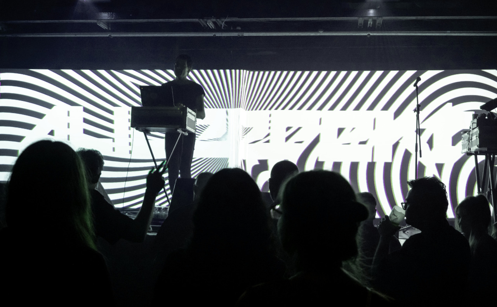

laeisthic
duomic
neauismetic
lives
demo
soundtrack
first wave
shikanokoa vs 1h1d
pedestrian paradise
nor let the fools
to the aeons hell
vermillionth
1H1D vs Shikanokoa, Osaka
04E02
Shikanokoa Vs 1h1d is an album of improvisational tracks.
It was recorded in Osaka at the event of the same name.

Netlabel Party - Tokyo
04E01
04E02
— 1H1D vs Shikanokoa, Osaka